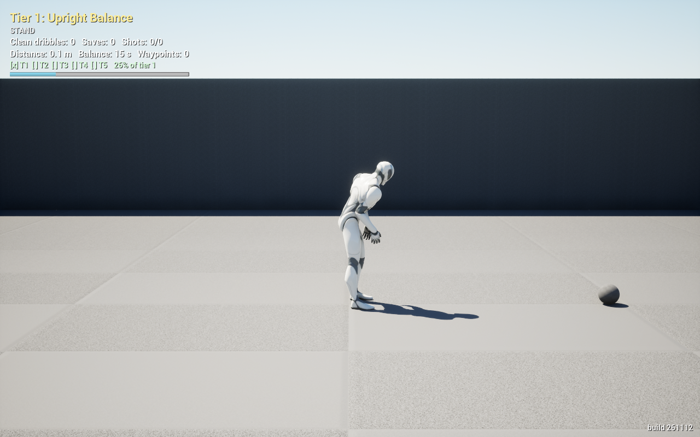
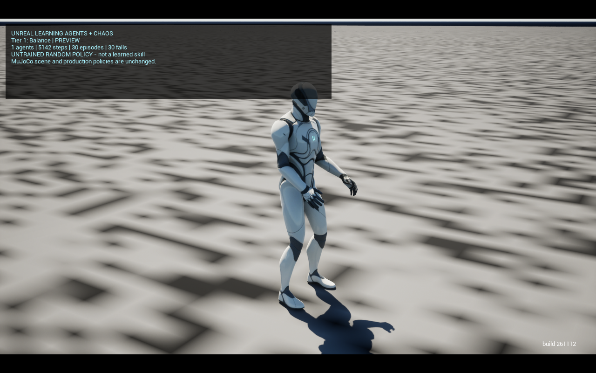

Unreal Learning Agents + Chaos
Isolated humanoid comparison | 2026-11-12 | interface chaos_la_v1 | physics native_drive_v2
Working training pipeline, not a trained skill. Balance and walking each completed 8,192 transitions and one PPO update.
Neither passed a balance/walking success gate. These smoke runs cannot rank Learning Agents against the mature MuJoCo controller.
What was created
A separate map/game mode, the same imported 15-body humanoid geometry and masses, 27 controlled degrees of freedom,
119 observation slots, native torque-limited Chaos servos, collision contacts, preallocated agent pools, episode resets, PPO, TensorBoard logs,
CSV metrics and four reloadable network snapshots. Control runs at 50 Hz with 2 ms physics substeps.
The original Court map, frozen contracts and production MuJoCo policies remain unchanged. Physics and reward formulations are approximations, not identical cross-stack benchmarks.
Before / after scene evidence
Before: original MuJoCo Court

Existing trained MuJoCo balance controller. Original tier HUD and bottom-right build stamp are preserved.
After: isolated Learning Agents preview

Actual Chaos-driven Manny, tracking camera, separate experimental HUD and build stamp. This preview uses an untrained random network and resets after falls.
Verified smoke results
16 agents per task. The two short runs executed concurrently, so wall time is not a controlled throughput benchmark.
buffer_reset and run_end are partial episodes, not successes. foot_drift is a failed balance episode, even without a fall. No run reached the 5-second time limit.
Smoke progress curves
Balance: sampled step reward (higher is better)
Ten one-second snapshots, not an episode-success curve. One PPO update is insufficient to establish learning or convergence.Balance: sampled pelvis height (metres)
Height above the collision floor. Frequent episode resets affect these snapshots; height alone does not demonstrate balance.Walking: sampled step reward (higher is better)
Ten one-second snapshots, not an episode-success curve. One PPO update is insufficient to establish learning or convergence.Walking: sampled pelvis height (metres)
Height above the collision floor. Frequent episode resets affect these snapshots; height alone does not demonstrate balance.Verification and limitations
- Win64 Development editor build succeeded. All 16 Streetball automation tests passed, including original MuJoCo golden observations, live physics, policies and presentation.
- Regression tests cover body masses, actuator mapping, reset pooling, anatomical joint anchors, Chaos child/parent ordering and zero-action servo targets.
- Ground-contact callbacks recorded in both tasks. All final smoke states remained finite; saved encoder, policy, decoder and critic snapshots were verified.
- A 250-transition / 5-second preview restored the balance candidate successfully, but fell twice. Resume is a weight warm-start, not optimizer/replay restoration.
- A further 8,192-transition resumed training smoke passed. The wrapper rejects a wrong-tier checkpoint with an explicit nonzero failure.
- Development runs with older constraint/drive revisions are superseded and excluded. Their recent files are retained under the 24-hour retention rule.
- No production ONNX was exported. No equal-budget training, push-randomized evaluation, 100-episode hold, full joint/contact gate or learning-convergence claim.
For context only, the existing MuJoCo balance evaluation reports 200 episodes, 100% success, zero falls and a 60-second mean.
That is a mature policy with a different training budget and evaluation protocol, not an apples-to-apples result.
Try it
From the repository root in PowerShell:
.\unreal\StreetballGym\Scripts\run_learning_agents.ps1 -Mode Preview -Tier 1
.\unreal\StreetballGym\Scripts\run_learning_agents.ps1 -Mode Preview -Tier 2
.\unreal\StreetballGym\Scripts\run_learning_agents.ps1 -Mode Smoke -Tier 1 -Agents 16
Preview starts an untrained network unless -Resume names a matching candidate directory.
Use -Tier 2 for commanded walking. The original Court is still the default map.
Full setup, training and resume instructions |
Recorded metrics and provenance
Raw sources
Loss/reward event files are retained in the project's Intermediate\LearningCore\TensorBoard directory.
This static report has no external scripts, fonts or network dependencies.